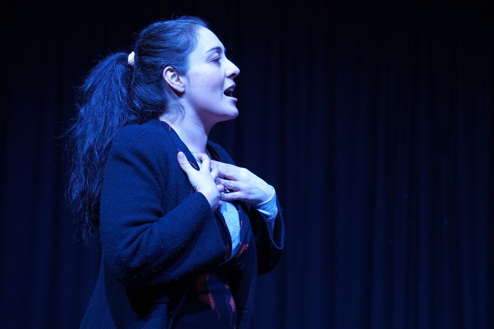

I am delighted to be performing the lead role of Denise Savage in 'Savage In Limbo,' by John Patrick Shanley at The Lantern Theatre, Brighton. The run commenced on 10th October 2024, marking the inaugural production of Pocket Of Light Theatre, which I co-founded with directors Sebastien Blanc and Caroline Farrington in 2023.
The play transports audiences to 1980s New York City, exploring the lives of five Bronx residents struggling to live below the breadline. The narrative unfolds across a single evening at a neighborhood dive bar called Scales, where each character attempts liberation from circumstances constraining their existence.
Shanley captures the wit, fire & idiosyncratic wisdom of Bronx immigrants he grew up with in East Tremont. He created this work to give air to all the disparate things that were at war within himself — a high-energy examination blending passion, philosophical inquiry, and magical realism. The production examines themes relevant to contemporary communities and society, grounded in the vibrant 1984 Bronx setting.